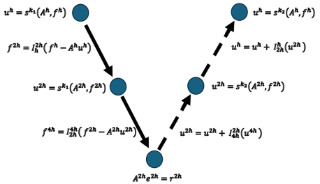
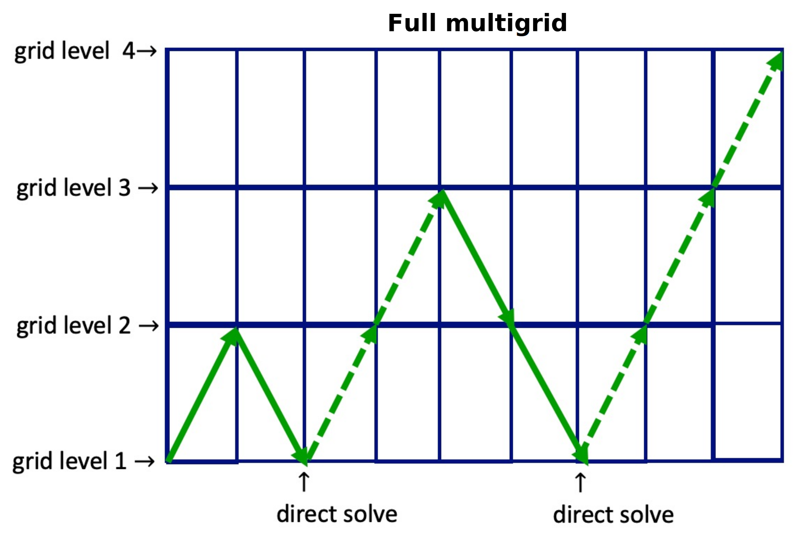

Numerical Schemes
MUSCL Scheme
The MUSCL scheme (Monotonic Upstream-centered Scheme for Conservation Laws) is a second-order in space finite volume method that is total variation diminishing (TVD) and can provide accurate simulations of shock dynamics. A succinct, semi-discrete representation of the scheme can be written
where \(F^{*}_{i\pm 1/2}\) are numerical fluxes that are a non-linear mix of first and second-order slope reconstructions depending on the gradients close to the current cell, and can be written in the form
where \(r_i\) is the ratio of successive gradient approximations and \(\phi: r_i \rightarrow [0,1]\) is a limiter function that selects a realistic spatial derivative value. One example of such a limiter function is the minmod limiter
In smooth areas of the flow, \(\phi_{mm}(r_i)\) will be close to one, which will select the higher-order approximation. Near a shock, \(r_i\) will approach infinity and \(\phi_{mm}(r_i)\) will be close to zero and the low-order approximation will be selected.
Runge-Kutta Time Evolution for Explicit Update
To fully discretize (\(\ref{semi}\)), we can use Heun’s method to approximate the time derivative. This method is second-order accurate in time. Heun’s method is a Runge-Kutta method with the following Butcher tableau:
Note
The method documented here is second-order accurate in space and time.
0 |
||
1 |
1 |
|
1/2 |
1/2 |
Each step is preceded by a reconstruction of primitive variables and a flux calculation given by a Riemann solver.
The quantity reconstruction to faces uses the rule
where \(\partial q^n_i/\partial s\) is the flux limited slope.
The calculation of a RK slope \(K\) is then
where the \(F_i\pm1/2\) are obtained from a Riemann solver. The code in this specialization example uses the HLL approximate Riemann sovler.
where \(S_T\) and \(S_H\) are the min and max characteristic speeds taken at the tail and head of the cell interfaces respectively, \(U_L\) and \(U_R\) are the respective intermediate quantities, and \(F_L\) and \(F_R\) are the flux functions evaluated at the respective intermediate quantities.
The RK slope is then used to advance the conserved variables, with which we can calculate the primitive variables and the next RK slope.
Geometric Multigrid Solver for Implicit Update
A geometric multigrid solver is a linear solver that uses the fact that relaxation methods such as the Jacobi or the Gauss-Seidel method converge faster in coarser domains or grids, and then the solutions in those coarser grids can be used as initial guesses of the relaxation methods applied in finer grids.
The method begins by applying a relaxation method to the system
After a few iterations of the relaxation method we obtain the approximate solution \(x'\). The residual \(r\) is then computed with \(r = b - Ax'\). This gives raise to the equation \(Ay = r\), such that \(y\) is a correction to the unkown array \(x\) and the improved approximation \(x''\) is given by
which only works if the operator \(A\) is linear.
To solve \(Ay = r\), the equation can be transported to a coarser grid where relaxation methods are more effective. This is done by applying a restriction operator on \(r \rightarrow r_c\). In the coarser grid, the system \(Ay_c = r_c\) is solved by applying the method described above, with an initial solution of \(y_{c0} = 0\).
Once obtained, the solution \(y_c\) is extended with a prolongation operator to the finer grid, where the correction (\(\ref{residual}\)) is applied. In the coarsest level an exact solution to the system is ideally calculated, but an approximated solution can be used as well.
The algorithm described above is named v-cycle due to its diagram:
A full multigrid (FMG) is the chaining of successive such v-cycles where a finer grid is added after each v-cycle is completed:
